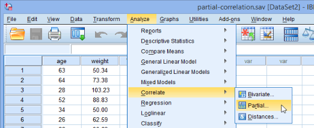

5 Variance, Covariance, Correlations, and Partial Correlations
5.1 The Roles of Covariance & Variance
A standard deviation (SD) describes how far away—on average—individual data points are from the mean. So, to compute the standard deviation, we essentially measure how far each data point is from the mean, and then take the average of those distances while standardizing this to be presented in z-scores (where one z-score equals one standard deviation). We can do this by taking each score’s distance from the mean, squaring those distances, and then taking the square root of that squared distance1, and then dividing it by the number of data points (um, well, actually dividing by the number of data points minus 1)2. The formula for doing all of this can be written as:
\[SD = \frac{\sqrt{\sum ( X - \bar{X})^2}}{n - 1}\]
where \(X\) is the score for any given member of the sample, \(\bar{X}\) is the sample mean of that score, and n is the sample size.
Although we often report the SD in Results sections, many calculations in fact use the variance instead, which is nearly the same formula but without the square root3:
\[\text{Variance} = \frac{\displaystyle{\sum_{i=1}^{n} ( X_{i} - \bar{X})^2}}{n - 1}\]
Note that I added some extra notation to the formula this time. The Xi simply means we’re subtracting a particular instance of the variable X, instance i. Which is instance i? Well, that’s the point: The stuff I now put around the summation symbol (\(\Sigma\)) explains what i means. That extra stuff around the summation symbol says that we’re starting with the first instance of (i = 1, i.e., at the first data point, whatever its value) and continuing until we get the last data point (when i = n, i.e., when we’ve reached the last data point); in other words, “Start at the beginning and go to the end.” So, if we wrote: \(\displaystyle\sum_{i=3}^{n-1}\) we’d mean to start at the third instance (e.g., third row in a data matrix) and go the to the next-to-last (n – 1) instance. I point this out both so you understand it and so we can notice better what’s going on when we next add another variable, Y, into the mix.
Covariance, of course, is how much two variables covary. Mathematically, we start by taking how much each pair of instances both vary from the mean:
\[ \text{First variable's difference} = X_{i} - \bar{X} \text{; Second variable's difference} = Y_{i} - \bar{Y} \]
Notice how both variables have an i as the subscript, indicating that we take the value for X for the, e.g., row as the take the value of Y. For example, for the first “instance” (e.g., row) in a data set, we say i = 1 and for that row, we have X1 and Y1; for the second instance, we have X2 and Y2 and so on.
So, when we compute the covariance:
we first take the difference from the respective means and then multiply these differences together (before then adding these up and dividing by n – 1), like so:
\[\text{Covariance} = \text{Cov}(X, Y) = \frac{\displaystyle{\sum_{i=1}^{n} (X_{i} - \bar{X})(Y_{i} - \bar{Y})}}{n - 1}\]
Note three things about this:
- Covariances can be negative (as typically conceived, variances and SDs cannot).
- Covariance is maximized when X and Y are both large at the same time. Sure, that also means that there will be times when X and Y are both small at the same time, but overall, those times when both X and Y are large are what make the covariance large4. Therefore, if you want to test the true magnitude of the covariance (e.g., the correlation) between two variables, try to measure a wide range of values to allow for the possibility of times when both values are large together.
- Because a few instances of X and Y being large together makes for a big covariance, it’s vulnerable to a few outliers. Just saying.
One more thing to note about the covariance: It’s represented in the same units as the variables. So, e.g., if we looked at the covariance between systolic blood pressure and lung volume, the covariance is in some weird millimeter x cubic centimeter units. This is fine—indeed necessary—if our variables are in those units, but it does often make it hard to conceive of what a covariance value actually means.
5.2 Correlations
In stats, we often standardize variables—put them all into units that are the same range—so that we can make comparisons between variables. We could do this any way we want, but commonly, we divide a value by the SD: This puts variables into the same range and the same units5.
We do this for covariances too, and often. Now, the covariance is the product of two variables, so we have to divide them by both their units, but that’s easily done:
\[\text{Standardized covariance} = \frac{\text{Cov}(X, Y)}{SD_{X}SD_{Y}}\]
As you may have figured out, this is in fact the formula for Pearson’s r, assuming both variables are interval / ratio.
This equation also reminds us that the concept of a signal-to-noise ratio that under-girds much of statistics is intrinsic to correlations. Here, of course, it’s the covariance : variance ratio.
5.3 Partial & Semipartial Correlations
The concepts that underlie partial correlations are another important fundamental aspects to much of statistics—especially linear regressions. In a nutshell, a partial correlation is the correlation between two variables after first removing the effect a third variable. A semipartial correlation (confusingly sometimes called a “part correlation”) removes the effect of a third variable from just one of the two correlated variables. We often say, e.g., that we’re looking at the correlation between two variables while “controlling for” the effect a third variable. (A correlation between two variables that does not account for a third (or fourth, etc.) variable is also called a zero-order or bivariate correlation.)
A partial correlation, then, is the correlation between two variables, say X and Y, after removing the correlation each has with a third variable, say Z. Symbolizing the partial correlation between X and Y after controlling for Z as rXY.Z:
\[r_{\mathit{XY}.Z} = \frac{\text{Correlation between }X \text{ and } {Y - {({\text{Correlations between }Z\text{ and both }X\text{ and }Y})}}}{\text{Residuals left over after removing the correlations between }Z\text{ and both }X\text{ and }Y}\]
More formally:
\[r_{XY.Z} = \frac{r_{XY} - r_{XZ}r_{YZ}}{\sqrt{(1 - r_{XZ}^{2})(1 - r_{YZ}^{2})}}\] A semipartial correlation, remember, controls for just the correlation of one of the variable with a third variable, say only controlling for the correlation of X and Z but not for the correlation of Y and Z:
\[r_{X(Y.Z)} = \frac{r_{XY} - r_{XZ}r_{YZ}}{\sqrt{(1 - r_{XZ}^{2})}}\]
We can create more complex partial and semipartial correlations, controlling not just for one other variable (here Z), but for several other, additional variables.
O.K., the value of a partial correlation should be pretty clear: If I’m interested in the correlation between, say, blood pressure and breathing efficiency, I may want to control for the effects of things like age and exercise.
But why would I want to compute a semipartial correlation? In fact, we do this all of the time. Let me explain:
A zero-order correlation (i.e., a correlation between two variables that doesn’t account for any other variables) does not make a judgment about where the variance lies—in fact, it’s essentially assumed to come more or less equally from both variables. Often however, we’re interested in looking at the variance in only one measure—the outcome measure. We want to know from whence comes the variation in our outcome; we are not interested in (or we try to control) the variance in our predictors. In a linear regression, we typically investigate the effect of predictor X on outcome Y while also controlling for the effect of predictor Z on outcome X. In other words, in linear regressions with one outcome and more than one predictor, we isolate the effects of each predictor on the outcome from the effect of other predictors on the outcome while letting each predictor fully covary with the outcome (i.e., let predictor X covary with outcome Y while removing the effect of predictor Z from the relationship between X and Y—unless we add a term for the covariance of X and Z as an interaction term).
5.4 Investigating Why DBT Works or Doesn’t Work
Dialectical behavior therapy (DBT) is an intervention strategy similar to cognitive behavior therapy. It focuses on using mindfulness training to help regulate one’s emotions and behaviors. Developed first for those with borderline personality disorders and subsequently found to be quite effective among those with suicidal tendencies, it is seen by some as holding potential use for more general populations.
Among those who believe it may help a broader range of individuals is the head of a local school. This school already has a modified—and more pervasively infused—health curriculum that seeks to help the school’s adolescent students understand and control their emotions, and through that be more in control of their academic and social lives.
This school therefore implemented a DBT “curriculum” that is completed by seventh- and eighth-grade students. There are now about four years of data tracking these DBT-participating students from sixth through ninth grade. This gives us a sense of how they were before participating in the DBT program, how they did during it, and if any changes persist a while afterwards. We also have sixth- through ninth-grade data for all students from years before the school implemented the DBT curriculum; these previous years’ students can serve as ersatz controls.
Initial analyses contend that the DBT program is associated with mild but significant improvements in participants’ executive functions relative to this ersatz control group. DBT participation was not associated with significant changes in academic performance. Of greater concern for the school, though, was that some students benefited much more strongly from the program than other students—and that students seemed not to benefit at all.
I was recently asked by the school to lend insight into those students who did not respond well to the DBT program. The idea is to understand for whom it does and doesn’t work so that the school can tailor the program to better help the students and perhaps to provide additional help for those who didn’t seem to get enough from the DBT program.
I was then asked to present my findings to the school’s administration. In fact, I presented it about three times, each time making my explanation (and analyses) simpler and simpler.
5.4.1 Your Task
How would you do if asked to do the same thing? Please therefore:
- Use simple descriptive statistics—such as frequency counts—as well as zero-order and partial correlations
- To investigate what factors (in the data described below) predict which students will benefit from the DBT program.
- Please write this up in a simple 1 – 2-page report that could be understood by non-experts.
The dataset ef_slopes.ods is accessible in our course’s BlackBoard site.
Please note:
Although anonymized, these are real data. Please treat them with the respect, confidentiality, and care.
Note as well that, as real data, there may be expected relationships between variables are not strong and unexpected relationships that are. In addition, most relationships won’t be statistically significant. Please don’t rely on significance as the only criterion you use to make your decisions: Instead, compare the relative magnitude of relationships to find ones you think hold more promise than other relationships; if something is indeed significant, that's nice, but we don't need to hold ourselves just to that.
5.4.2 Description of the Data
The variables in the dataset are:
ID
An identifier for each student.
Received DBT Intervention?
Whether the given student did (1) or did not (0) participate in the full regimen of the DBT program.
Teacher Same Ethnicity?
Whether the teacher is (1) or is not (0) the same ethnicity as the student.
Teacher Same Gender?
Whether the teacher is (1) or is not (0) the same gender as the student.
Behavioral Regulation Slope – Teacher Report
Each year, teachers at the school are asked to rate a subset of their students on a list of various behaviors believed to indicate a student’s level of executive functioning. The scores on these behaviors are summed to create a score for each student each year. To facilitate analyses here, I computed the normalized slope for the line on which a student’s yearly score regressed. For all slopes, negative values indicate improvements—that a student’s functioning got better.
Behavioral regulation includes a subset of executive functions most closely related to one’s overt behaviors.
Meta-Cognitive Slope – Teacher Report
Meta-cognition includes a subset of executive functions most closely aligned with how one thinks and feels.
All Executive Functions Slope – Teacher Report
All executive functions combines the scores of the behavioral regulation and meta-cognitive sub-domains into a total score.
Behavioral Regulation Slope – Student Self-Report
Each year, in addition to the teachers rating a subset of their students, each student also rates themself on how they feel they’ve behaved vis-à-vis behaviors related to executive functioning.
The behavioral regulation slope is the regression line for the scores for each students across these four years on executive functions most related to overt behaviors. Again, negative slopes denote improvements in executive functioning.
Meta-Cognitive Slope – Student Self-Report
Again, these are executive functions most closely aligned with internal cognitions or emotions—here as self-reported by the students.
All Executive Functions Slope – Student Self-Report
The students’ self-reported behavioral regulation and meta-cognitive subscores are first combined here before a slope for the regression line was computed for each student.
Mindfulness Slope
Recently, we added a self-reported mindfulness score by asking students to complete another instrument commonly seen to measure just that. Again, negative slopes indicate improvements.
Emotional Regulation Slope
The students complete a third instrument that measures their emotional regulation per se. Again, negative slopes indicate improvements.
Discipline Incidents Slope
Records are kept for whenever something happens on campus that leads to a student being “written up” for something that requires that student being somehow disciplined. Therefore, each student has a number of times that they are “written up” each year. This number could range from zero (for never having been written up for something requiring discipline) to sometimes rather large values.
This slope is the linear regression of this number of discipline incidents each year. Positive values therefore indicate growths in the number of times that student “got into trouble.”
This is also among the main outcome variables the school was interested in: They wanted to understand who had more discipline incidents, who subsequently got better, and—especially—whom benefited least from the DBT program so that these student (and those like them) could be targeted for more help.
Self-Reflection Slope
The linear regression for the number of times a student was put in what is essentially a mild form of in-school suspension. Positive values denote more incidents.
In-School Suspension Slope
The linear regression for the number of times a student was put in what is essentially actual in-school suspension. Positive values denote more incidents.
Out-of-School Suspension Slope
The linear regression for the number of times a student was suspended from school; this is the most severe of the three types of suspensions. Positive values denote more incidents.
ELA Grade
A 4-point grade for the student on English / language arts courses for that student’s ninth grade. 4 is the highest grade possible.
Math Grade
A 4-point grade for the student on math courses for that student’s ninth grade. 4 is the highest grade possible.
Female?
Whether the student does (1) or does not (0) identify as female.
Free/Reduced School Lunch Group
Whether the student is in the economic stratum that was previously used to allow them to be eligible for free (1) or reduced (0) school lunches, or whether they were not eligible (-1) for free / reduced school lunches.
Economic Distress?
Like Free/Reduced School Lunch Group, this is a measure of the student’s family’s economic situation, simply whether a student does (1) or does not (0) classify as experiencing economic distress.
Mother at Home?
Whether the student self-reported that their mother does (1) or does not (0) live with them.
Father at Home?
Whether the student self-reported that their father does (1) or does not (0) live with them.
Adult Brother at Home?
Whether the student self-reported that one or more adult brothers do (1) or do not (0) live with them.
Adult Sister at Home?
Whether the student self-reported that one or more adult sisters do (1) or do not (0) live with them.
Grandparent at Home?
Whether the student self-reported that one or more grandparents do (1) or do not (0) live with them.
Other Adult at Home?
Whether the student self-reported that one or more “other” adults do (1) or do not (0) live with them.
Total Number of Adults st Home
Simply the sum of each of the other “adults at home” variables.
Special Education Status
Whether a student has been (1) or has not been (0) diagnosed with a condition that makes them eligible for special education services.
Intellectual Impairment?
Whether a student has been (1) or has not been (0) diagnosed with an intellectual disability.
High Risk Category
Whether a student has been (1) or has not been (0) identified as benefiting from interventions related to high-risk behaviors.
Years at This School
The number of years the student has been at this school.
Number of School Absences
The number of times in ninth grade that the student was absent—excused or not—from school.
Ethnicity: Asian
A dummy variable indicating whether the student identifies as Asian (1) or not (0). Note that dummy variables are a good way to handle times when participants can identify with more than one group; some participants are identified here by more than one “ethnicity” dummy variable.
Ethnicity: American Indian
A dummy variable indicating whether the student identifies as American Indian (1) or not (0).
Ethnicity: Black
A dummy variable indicating whether the student identifies as Black (1) or not (0).
Ethnicity: Hispanic
A dummy variable indicating whether the student identifies as Hispanic/Latin (1) or not (0)).
Ethnicity: White
A dummy variable indicating whether the student identifies as White (1) or not (0).
5.5 Using SPSS
5.5.1 Accessing SPSS & Data Importation
Go to CUNY Virtual Desktop: https://www.cuny.edu/about/administration/offices/cis/virtual-desktop/
Click on the SPSS icon to open it. N.b.: You session can time out and suddenly. Make sure you save your work to an actual hard drive (or USB, online account, etc.) so you don’t loose it!
In SPSS, with
Open another file...highlighted, clickOpenand navigate to wherever you haveef_slopes.odssaved.- The first line indeed includes names, so leave that option checked
- The delimiter is indeed a comma, decimals are periods, and text marked with double quotes, so leave those options chosen
When you finish the data importations, SPSS opens an
Outputwindow (in addition to the Data Editor window). In this window will appear both the results of any analyses and the code that SPSS used to generate those results. This is worth explaining.- A benefit of SPSS is that it has an efficient and intuitive GUI, but in fact that GUI is used by SPSS to generate code that it actually uses to manipulate data and run operations.
- At first, then, you can rely on the GUI to run analyses. However, we you gain experience, you can modify the code generated through the GUI before finally simply pasting / writing in code without using the GUI.
- You can also easily chose parts of SPSS’s output to copy and paste elsewhere, e.g., into a manuscript (for figures, tables, etc.) or a text editor (for code).
- For example, if we had specified formats for the variables in the
Advanced Optionsfor the data importation, we could pate out the code generated now into a file that we simply access to re-import those (or similar) data. - In the output, you’ll notice that you can navigate from the left-hand menu, as well as delete output you no longer want. You can also right-click to rename many aspects of it and then save / export it.
- For example, if we had specified formats for the variables in the
- You can also access the GUI from either the
Data Viewwindow or theOutputwindow, letting you run / modify analyses either while looking at your data or the results, respectively.
Focusing instead on the
Data Editorwindow, notice there are two tabs at the bottom, aData Viewand aVariable Viewtab.The
Data Viewtab presents the data in the matrix form one is used to in a spreadsheet program.- Like a spreadsheet program, clicking into a cell allows one to directly modify its contents.
- Right-clicking a column allows one to access and modify information, etc. about that variable. (Right-clicking rows has fewer options.)
- Note that SPSS thus requires that data be formatted with variables as columns and cases as rows.
5.5.2 Conducting Correlations and Partial Correlations in SPSS
To conduct correlations, simply click
Analyze > Correlate > BivariateIn the dialogue box that opens, put the variables you wish to correlate. However, we can have SPSS compute zero-order correlations along with partial correlations.
To conduct partial correlations, choose
Analyze > Correlate > Partial

In thePartial Correlationsdialogue box, choose which variables you wish to correlate, and which you’d like to control for:

Click the
Optionsbutton, and select, e.g.,Means and standard deviationsandZero-order correlations6 checkbox in theStatisticsareaPlease use these correlations along with table of, e.g., frequencies to prepare a report on insights you make into these data.

You’ll often hear people say the reason we square the distances and then take the square root is to make all of the distances positive; otherwise, all of the distances from the mean would cancel each other out. Although this is true, couldn’t we just take the absolute value of each distance instead?
Yes, we could. A major difference between taking-the-absolute value-of-the-distances and squaring-then-square-rooting-the-distances is that squaring-then-square-rooting-the-distances amplifies the role of data points farther from the mean. And amplifying their effects was indeed one reason that method was chosen: Those who devised all of this wanted to give stronger weight to scores that are farther from the mean. Outliers and other scores that aren’t as well represented by the mean were intentionally made to matter more, in part because they were considered to have more information in them them scores closer to the mean.
So yeah, it’s kinda ironic that a lot of consternation is now given to removing outliers from data sets to produce more robust statistics.↩︎The reason we use (n – 1) instead of simply n is a good one—even if it’s a rather nuanced reason. We are using a sample to estimate the values for a population, and since we don’t know the population mean, we take away a degree of freedom to indicate we don’t know that value. In fact, every time we have to estimate something in an analysis, we take away a degree of freedom to estimate that value. Practically, this serves to make the sample SD slightly larger than the population SD since we are dividing by a smaller number (1/2 of something is larger than 1/3 of it). This reflects the fact that we don’t know so well the actual (population) value.
We also typically use lower-case n to denote the number in a sample or subset of data set and upper-case N to denote the total number, e.g., in a population or in the whole data set, but this convention isn’t always followed, so we usually just infer what the n/N refers to.
Finally, by convention, we italicize Roman letters in equations so that we know those letters denote variables; we don’t italicize Greek letters, because, well, Greece is not in Italy. That, and since we don’t usually write things in Greek, it’s pretty clear those Greek letters denote variables. Confusingly, the way I generate the formulas in this book doesn’t follow this convention and italicizes Greek letters as well; please do as I say, not as I do.↩︎And that’s an other reason we don’t just take the absolute value of the distances of each point from the mean. Variance—the average squared distance—is used “under the hood” in calculations more often than standard deviation.↩︎
This formula is the main way that outliers have an out-sized effect on what we do in frequentist statistics. They more strongly affect the variance and covariance that are in turn used in many equations.↩︎
Yeah, we also often first subtract them from the mean, so that a 0 for one variable is comparable to a 0 from another variable.↩︎
Remember, zero-order correlations is the confusing term for simple, bivariate correlations between two variables.↩︎
Social Emotional Impairment
Whether a student has been (1) or has not been (0) diagnosed with a social and/or emotional disability.